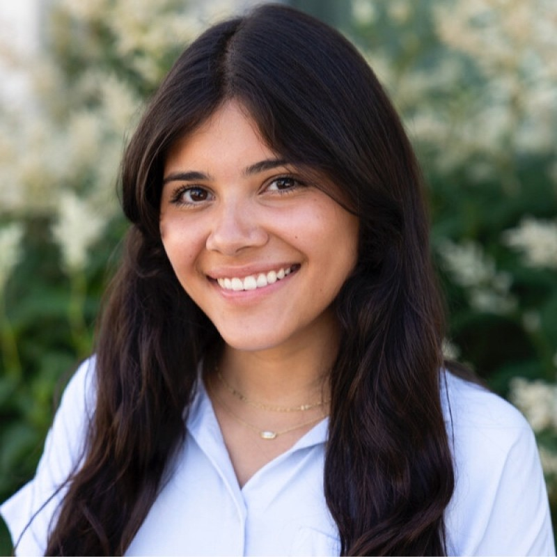

Janelle Mella is a junior at Northwestern University majoring in Journalism with double minors in Film and Media Studies and Asian American Studies. At Northwestern, she has held several editing and reporting positions at The Daily Northwestern, covering student government and campus issues.
She has also reported professionally for Wisconsin Watch, where she covered statewide issues and explored solutions in rural communities, with a focus on housing affordability and homelessness. In the summer of 2026, she will serve as a metro reporting intern at The News & Observer.
Janelle is passionate about telling stories rooted in community voices and aspires a career covering local communities, grounded in investigative and solutions-oriented journalism.